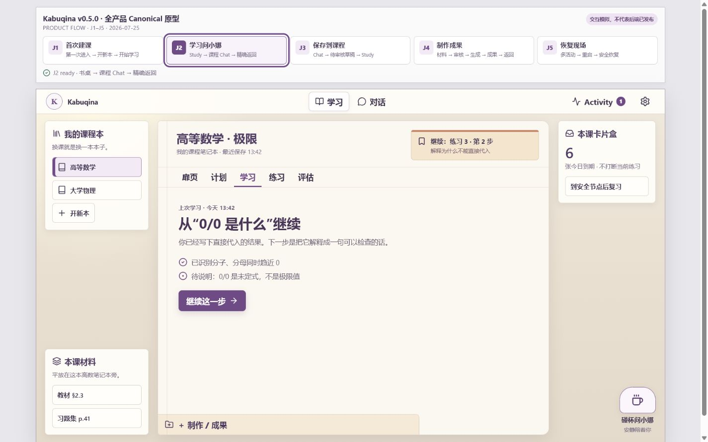
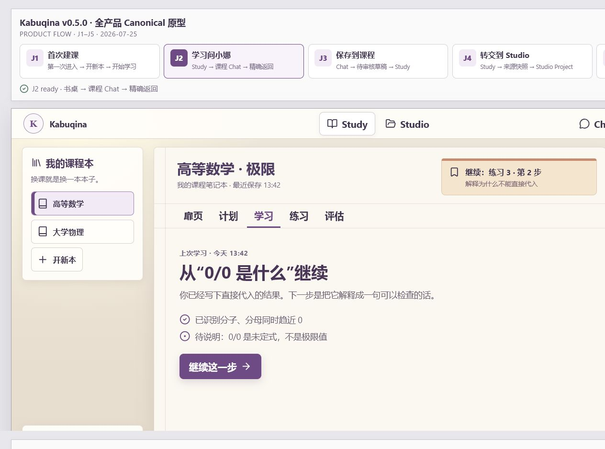
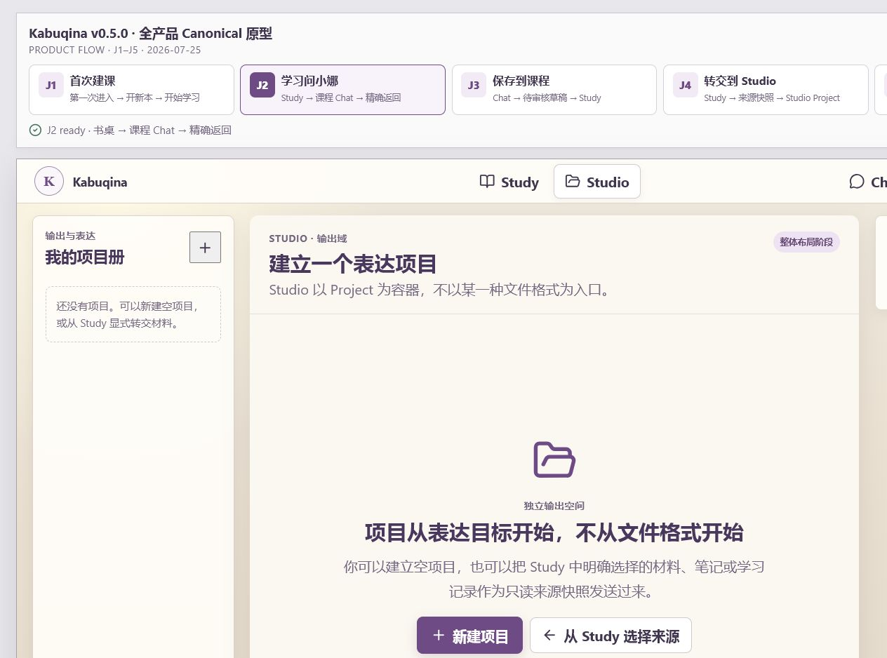
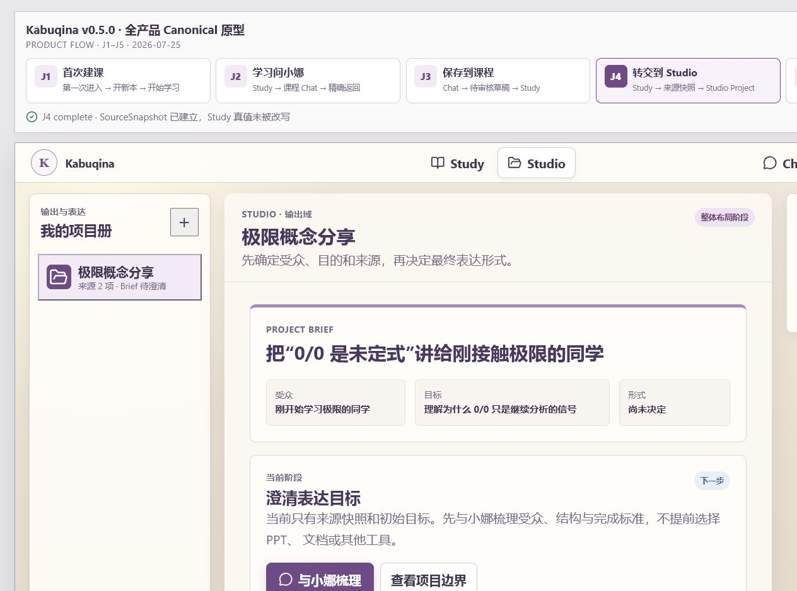
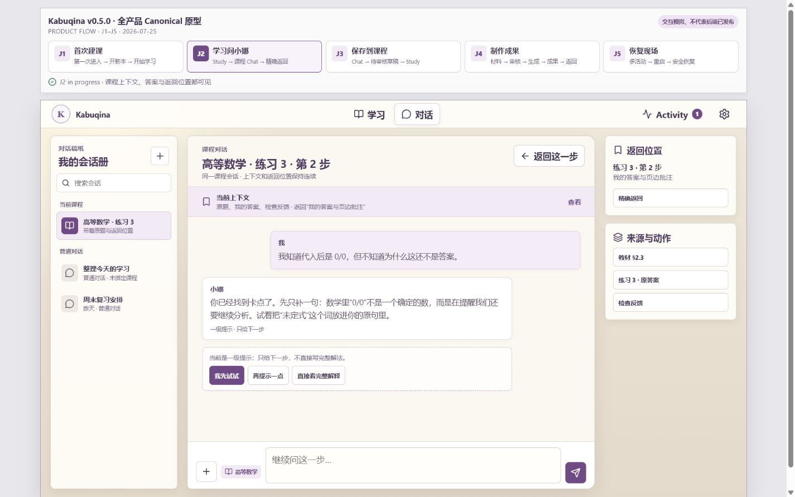
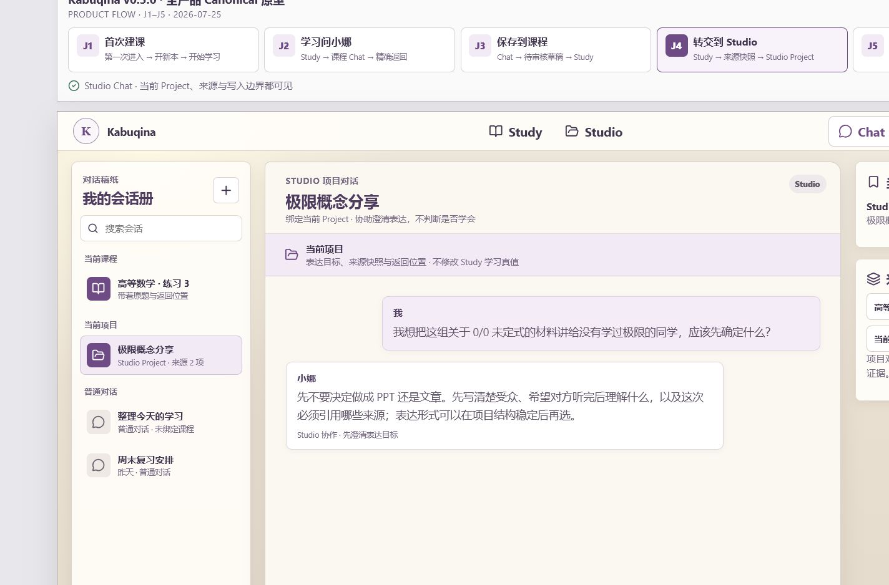

Kabuqina v0.5.0 · Study / Studio QA
视觉基线沿用冻结 Study 书桌；本轮只重构产品层级、Studio 整体布局和跨域连接。
Product Shell：重构前 / 重构后
Source · Study / Chat shell

Implementation · Study / Studio shell

Studio：空项目 / 已连接 Project
Empty Studio · layout boundary

Connected Project · SourceSnapshot

Chat：课程作用域 / Studio Project 作用域
Course Chat source language

Studio Chat implementation
